Oppgaver: Andregradsulikheter#
Oppgave 1#
Til høyre vises grafen til en andregradsfunksjon \(f\).
Løs ulikheten
Grafen til \(f\) skjærer \(x\)-aksen i \((-3, 0)\) og \((1, 0)\). Grafen ligger under \(x\)-aksen mellom disse to punktene som betyr at \(f(x) \leq 0\) når
Til høyre vises grafen til en andregradsfunksjon \(g\).
Løs ulikheten
Grafen til \(g\) skjærer \(x\)-aksen i \((-1, 0)\) og \((3, 0)\). På nedsiden av \((-1, 0)\) og på oversiden av \((3, 0)\) ligger grafen til \(g\) under \(x\)-aksen som betyr at \(g(x) < 0\) når
Til høyre vises grafen til en andregradsfunksjon \(h\).
Løs ulikheten
Grafen til \(h\) skjærer \(x\)-aksen i \((-5, 0)\) og \((1, 0)\). Mellom disse to punktene ligger grafen til \(h\) over \(x\)-aksen som betyr at \(h(x) > 0\) når
Oppgave 2#
Ta quizen!
Oppgave 3#
En andregradsfunksjon \(f\) har fortegnslinja:

Avgjør hvilken av grafene nedenfor som viser grafen til \(f\).
{kind=link}
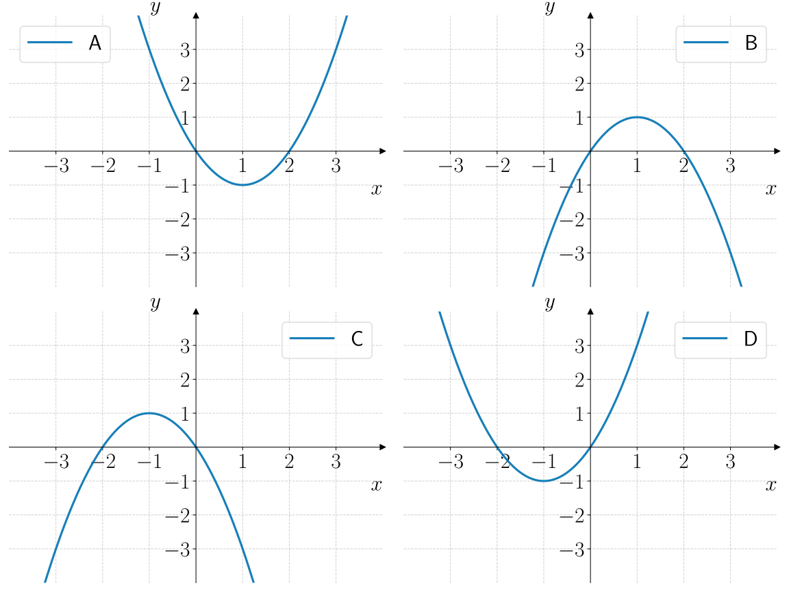
Graf C.
En andregradsfunksjon \(g\) har fortegnslinja:

Avgjør hvilken av grafene nedenfor som viser grafen til \(g\).
{kind=link}
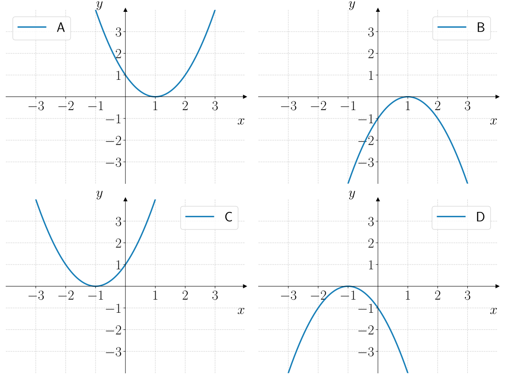
Graf A.
En andregradsfunksjon \(h\) har fortegnslinja:

Avgjør hvilken av grafene nedenfor som viser grafen til \(h\).
{kind=link}
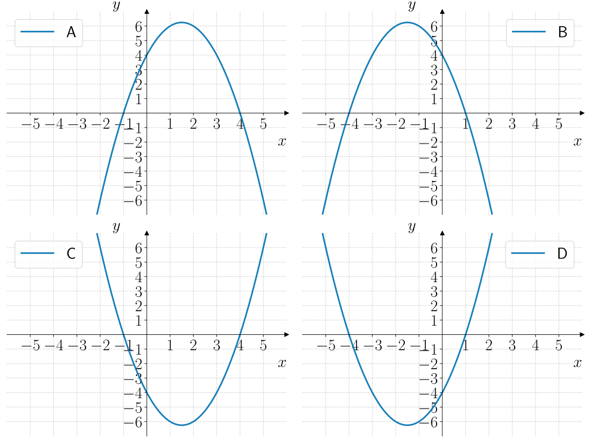
Graf D.
Oppgave 4#
Nedenfor vises fortegnslinja til en andregradsfunksjon \(f\).
Løs ulikheten
{kind=link}
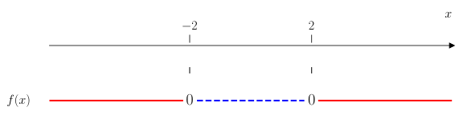
{kind=link}
Nedenfor vises fortegnslinja til en andregradsfunksjon \(h\).
Løs ulikheten
{kind=link}
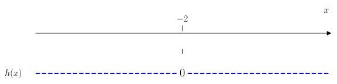
Nedenfor vises fortegnslinja til en andregradsfunksjon \(p\).
Løs ulikheten
{kind=link}
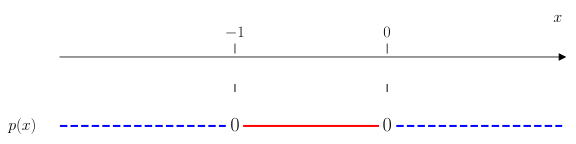
Oppgave 5#
Løs ulikheten
{kind=link}
Løs ulikheten
Vi starter med å tegne fortegnslinja til \(f(x) = (x - 1)(x + 4)\). Vi tegner først en fortegnslinje for hver faktor, deretter ganger vi fortegnene sammen for å få fortegnslinja til \(f(x)\):
{kind=link}
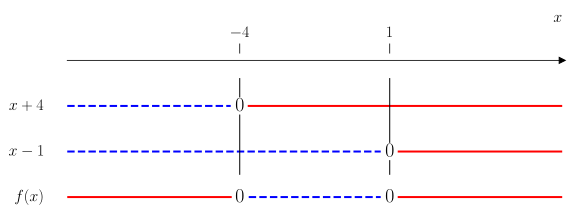
Fra fortegnslinja til \(f(x)\) ser vi at \(f(x) \geq 0\) når
Løs ulikheten ved hjelp av å tegne fortegnslinje.
Vi starter med å tegne fortegnslinja til \(f(x) = -2x(x - 3)\). Vi tegner først en fortegnslinje for hver faktor, deretter ganger vi fortegnene sammen for å få fortegnslinja til \(f(x)\):
{kind=link}
Fra fortegnslinja til \(f(x)\) ser vi at \(f(x) < 0\) når
Løs ulikheten ved å bruke en fortegnslinje:
{kind=link}
Oppgave 6#
Løs ulikheten
Vi starter med å nullpunktsfaktorisere andregradsuttrykket. Vi finner nullpunktene med \(abc\)-formelen:
Dermed er nullpunktene gitt ved
Da kan vi skrive om ulikheten til
Så tegner vi en fortegnslinje for \(f(x) = -(x - 1)(x - 3)\):
{kind=link}
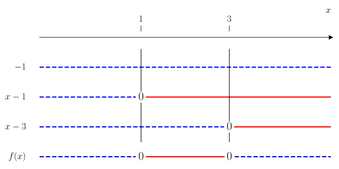
Fra fortegnslinja ser vi at \(f(x) \leq 0\) når
Løs ulikheten
Vi starter med å nullpunktsfaktorisere andregradsuttrykket. Vi finner nullpunktene med \(abc\)-formelen:
Dermed er nullpunktene gitt ved
Da kan vi skrive om ulikheten til
Så tegner vi en fortegnslinje for \(f(x) = (x - 1)(x + 5)\):
{kind=link}
Fra fortegnslinja til \(f(x)\) ser vi at \(f(x) \geq 0\) når
Løs ulikheten
Vi starter med å samle alle ledd på én side av ulikheten slik at vi får \(0\) på høyre side:
Vi gjenkjenner uttrykket som 1.kvadratsetning:
Dermed kan vi skrive om ulikheten til
Vi tegner en fortegnslinje for \(f(x) = (x + 3)^2\):
{kind=link}
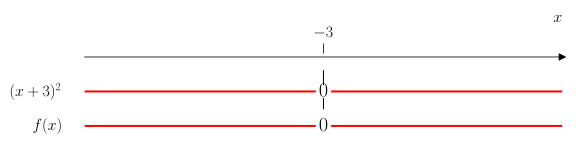
Fra fortegnslinja til \(f(x)\) ser vi at \(f(x) > 0\) når
Løs ulikheten
Vi starter med å samle alle ledd på én side av ulikheten slik at vi får \(0\) på høyre side:
Siden \(x^2 + 1\) er et kvadratisk uttrykk som alltid er større enn \(0\), er ulikheten alltid sann. Dermed er løsningen
Oppgave 7#
I gif-en nedenfor vises et eksempel på hvordan man løser en andregradsulikhet med CAS:

Bruk CAS til å løse ulikheten

Fra utskriften ser vi at løsningen er
Bruk CAS til å løse ulikheten

Fra utskriften ser vi at løsningen er
Bruk CAS til å løse ulikheten

Fra utskriften ser vi at løsningen er
Bruk CAS til å løse ulikheten

Fra utskriften ser vi at løsningen er
Oppgave 8#
Nedenfor vises grafen til en andregradsfunksjon \(f\) og en lineær funksjon \(g\).
{kind=link}
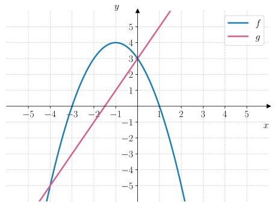
Løs ulikheten
Vi ser at grafen til \(f\) skjærer \(x\)-aksen i \((-3, 0)\) og \((1, 0)\). Grafen ligger under \(x\)-aksen på nedsiden av \((-2, 0)\) og på oversiden av \((3, 0)\). Dermed er løsningen
Løs ulikheten
Grafen til \(f\) skjærer linja \(y = 3\) i \((-2, 3)\) og \((0, 3)\). Mellom disse to punktene, så ligger grafen til \(f\) over linja \(y = 3\). Dermed er løsningen
Løs ulikheten
Grafene til \(f\) og \(g\) skjærer hverandre i punktene \((-4, -5)\) og \((0, 3)\). Mellom disse to punktene, så ligger grafen til \(f\) på oversiden av grafen til \(g\). Dermed er løsningen av ulikheten
Oppgave 9#
Nedenfor vises grafen til en andregradsfunksjon \(f\).
{kind=link}
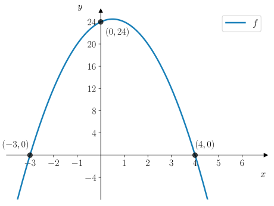
Bestem \(f(x)\).
Vi ser at grafen skjærer \(x\)-aksen i \((-3, 0)\) og \((4, 0)\) som vi kan bruke til å bestemme \(f(x)\) på nullpunktsform:
Grafen skjærer \(y\)-aksen i \((0, 24)\) som vi kan bruke til å finne verdien til \(a\):
Dermed er
Løs ulikheten
Vi ser at grafen ligger under \(x\)-aksen på nedsiden av \((-3, 0)\) og på oversiden av \((4, 0)\). Dermed er løsningen
Løs ulikheten
Her får vi ikke lest av fra grafen, så vi tyr til algebraisk løsning. Vi skal løse ulikheten
Vi ganger ut venstre side:
Så sørger vi for at vi for \(0\) på høyre side:
Vi kan også dele uttrykket med \(-2\) (og huske på å snu ulikhetstegnet):
Så bestemmer vi nullpunktene til andregradsuttrykket med \(abc\)-formelen:
Dermed er nullpunktene gitt ved
Da kan vi skrive om ulikheten til
Så tegner vi en fortegnslinje for \((x + 2)(x - 3)\):

Fra fortegnslinja ser vi at
Oppgave 10#
I figuren nedenfor vises grafen til en andregradsfunksjon \(f\).
{kind=link}
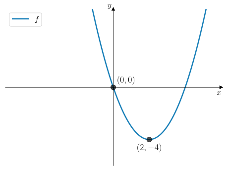
Bestem \(f(x)\).
Grafen til \(f\) har et bunnpunkt i \((2, -4)\) og et nullpunkt \((0, 0)\) Fordi symmetrilinja er i \(x = 2\), så vil det andre nullpunktet ligge samme avstand fra symmetrilinja langs \(x\)-aksen som betyr at det andre nullpunktet er i \((4, 0)\). Da kan vi skrive \(f(x)\) på nullpunktsform:
For å finne verdien til \(a\), så bruker vi bunnpunktet:
Dermed er
Løs ulikheten
Fra grafen til \(f\) kan vi se at grafen ligger under \(x\)-aksen mellom nullpunktene. Dermed er \(f(x) \leq 0\) når
Løs ulikheten
Vi skal løse ulikheten
Vi skriver om ulikheten slik at vi får \(0\) på høyre side:
Så finner vi nullpunktene til andregradsuttrykket med \(abc\)-formelen:
Dermed er nullpunktene gitt ved
Det betyr at vi kan skrive om ulikheten til
Grafen til dette uttrykket er konveks (den smiler \(\smile\)) som betyr at den må ligger under \(x\)-aksen mellom nullpunktene. Dermed vil løsningen av ulikheten være \(x\)-verdiene som ligger på nedsiden og oversiden av nullpunktene. Altså er
Oppgave 11#
En ulikhet har løsningen
Lag en ulikhet som har denne løsningen.
Vi kan velge en andregradsfunksjon \(f\) som har nullpunkter i \(x = -2\) og \(x = 1\), og som er konveks (slik at den smiler \(\smile\)). Da vet vi at grafen ligger under \(x\)-aksen mellom nullpunktene. Derfor er en mulig ulikhet denne:
En ulikhet har løsningen
Lag en ulikhet som har denne løsningen.
Vi kan velge en andregradsfunksjon \(f\) som har ett nullpunkt i \(x = -2\), og som er konveks (slik at den smiler \(\smile\)). Da vet vi at grafen alltid ligger over \(x\)-aksen bortsett fra i \(x = -2\). Da er en mulig ulikhet denne:
En ulikhet har løsningen
Lag en ulikhet som har denne løsningen.
Vi kan velge en andregradsfunksjon \(f\) som har nullpunkter i \(x = -4\) og \(x = 4\), og som er konveks (slik at den smiler \(\smile\)). Da vet vi at grafen ligger under \(x\)-aksen mellom nullpunktene slik at følgende ulikhet vil ha den oppgitte løsningen:
En ulikhet har løsningen
Lag en ulikhet som har denne løsningen.
Vi kan velge en andregradsfunksjon \(f\) som har nullpunkter i \(x = -\dfrac{1}{2}\) og \(x = 4\), og som er konkav (surt fjes \(\frown\)). Da vet vi at grafen til \(f\) ligger under \(x\)-aksen på nedsiden og oversiden av nullpunktene. Dermed vil følgende ulikhet ha den oppgitte løsningen:
Oppgave 12#
Anna jobber med funksjonen
Hun forsøkte å løse en ulikhet i CAS og fikk følgende utskrift:

Forklar hva utskriften forteller oss om grafen til \(f\).
Ulikheten har ingen løsning, som er grunnen til at utskriften gir \(\{\}\). Siden Anna har prøvd å løse ulikheten \(f(x) < 0\), forteller det oss at grafen aldri ligger under \(x\)-aksen.
Oppgave 13#
En andregradsfunksjon \(f\) er gitt ved
Bestem \(r\) slik at \(f\) bare har ett nullpunkt.
Vi bruker \(abc\)-formelen for å avgjøre hvilke verdier for \(r\) som gir ett nullpunkts:
Vi får \(0\) i kvadratroten dersom
Altså har grafen til \(f\) ett nullpunkt hvis
Bestem \(r\) slik at \(f\) ikke har noen nullpunkter.
Vi vet at \(f\) ikke har noen nullpunkter dersom vi får et negativt tall i kvadratroten, som betyr at \(f\) ikke har noen nullpunkter dersom
Dette er et andregradsuttrykk som er konveks – den smiler  – og som har nullpunkter i \(r = -1\) og \(r = 1\). Grafen vil være negativt mellom nullpunktene, så derfor vil ikke \(f\) ha noen nullpunkter dersom
– og som har nullpunkter i \(r = -1\) og \(r = 1\). Grafen vil være negativt mellom nullpunktene, så derfor vil ikke \(f\) ha noen nullpunkter dersom